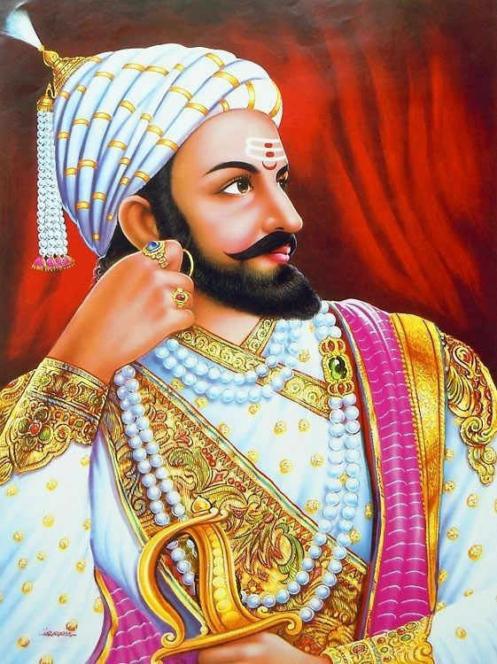

Hello friends, welcome to my website . In today's article, we introduce the life of Veer Shivaji. Will read the biography of Shivaji.
Born- 19 February 1630
Location- Shivneri Fort
mother - jeejabai
Father- Shahji Bhosale
Death- 3 April 1680
Chhatrapati Veer Shivaji was born on February 19, 1630 in a fort named Shivneri. His father's name was Shahaji Bhosale, who was a Samant and Shivaji's mother's name was Jijabai, his mother was an exceptionally talented woman. Shivaji's elder brother's name was Sambhaji..
His parents had a profound impact on Shivaji's life. His elder brother Sambhaji used to spend more time with his father, while Shivaji's childhood was spent under the guidance of his mother. Shivaji learned a lot from his mother, he learned politics and war from her. If seen, his mother was his first teacher and his mother is considered to be his first teacher.
Aurangzeb, whose rule was over North India at that time, turned his attention towards the south. Aurangzeb was well aware of the increasing dominance of Shivaji in the south. Therefore, to control Chhatrapati Shivaji, he sent his maternal uncle Shaistan Khan as the subedar of the south. Shaistan Khan reached Poona with an army of 1,50,000, he looted Maval for about 3 years, at the end Shivaji attacked him with 250 Mavalis, in this attack Shaistan Khan escaped but he had to lose his 4 fingers and Countless soldiers were killed along with his son Abul Fath and forty guards.